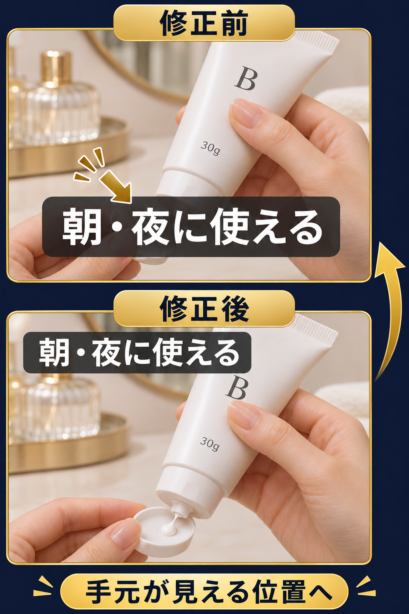

参考を探し、直して投稿し、反応を見る。
参考は、保存して終わりではありません。買う人に何を伝えるかを決め、自分の商品で一本試すところまで進めます。
- 1｜見つける
商品名＋買う前の疑問で検索。
- 2｜選ぶ
今の反応、同じ紹介の重なり、自分でも撮れるかを見る。
- 3｜理由を決めて直す
何を伝えるための作りかを読み、自分の商品へ変える。
- 4｜投稿する
商品情報・購入条件・自分の紹介リンクを確かめる。
- 5｜見直す
同じ日数の表示・クリックや質問を見て、一か所を試し直す。
選ぶ順番は、買う人の疑問に答えるか → 自分の商品でも言えて撮れるか → 今の反応はどうか。新しさや再生数だけで決めません。
朝のメイク前に使うクリームを選びたい人へ、「朝も使える？」「どう取り出す？」を伝える例です。

自分の商品でも言えるか未確認なので、今回は使いません。
僕ならこちらを使います。疑問に答えられて、自分でも撮れるからです。
最初の参考動画を探すとき
- 投稿したいSNSの検索欄へ、商品名と買う人の疑問を入れます。例：「保湿クリーム 朝 メイク前 使い方」。
- 新しい動画と以前の動画を開き、買う人のどの疑問に答えているか、自分でも撮れるかを見ます。気になる投稿は時間を置いて開き、反応が増えているか、似た紹介が続いていないかも確かめます。数字が大きいだけで、自分にも合うとは決めません。
- 自分の商品の表示を確認し、参考動画を見て分かったことと分けてメモします。参考動画のURL・投稿日・自分で確認した日も残します。
タイトルの金額は、一つの編集変更だけで再現できるものではありません。ここでは、商品に合う説明や見せ方を選び、試す方法を練習します。
参考の順番で、自分の商品の撮り方を決める。
参考から取り入れる順番と、自分の商品で変えるところを分けます。
Aはジャー50g、Bはチューブ30gで、どちらも朝夜に使える設定です。未確認の使用感は足しません。
4場面のセリフと映像を見る
この順番で撮る4場面
- 1
「朝のメイク前に使う保湿クリームを選ぶなら、まず容器と取り出し方を見てみましょう。」
映すもの：朝のメイク前の支度をする机に、クリームAとBを並べる。 - 2
「Aはジャー容器で50g入りです。ふたを開けて、クリームを取ります。」
映すもの：ジャーのふたを開けて、クリームを取る手元。 - 3
「Bはチューブで30g入りです。キャップを開けて、押し出します。」
映すもの：チューブのキャップを開け、押し出す手元。 - 4
「AもBも朝と夜に使えます。詳しい使い方は、商品の表示を確認してください。」
映すもの：使える時間と使い方が分かる商品の表示。
投稿後の質問から、見せる場所を変える
Bが映る場面で答えると、どちらの商品についての説明か分かります。質問がないときも、表示・クリックの記録や、自分の映像で手元が隠れていないかを見直します。
記入例を見ながら撮影メモを書く
音と字幕の位置を直す例も見る
ふたが開く場面に音を合わせる。
音を合わせるのは、ふたが開く動きを見てもらうためです。自分の動画を再生して、動きと音が合う位置へ直します。
ふたと手元が見える位置に字幕を置く。
参考と同じ位置に字幕を置いて、見せたい手元が隠れたら意味がありません。自分の映像の余白へ移し、再生して確かめます。
公開前に確かめる3点
- ふたが開く場面と、音の位置が合っているか。
- 字幕で容器や手元が隠れていないか。
- 原稿の仕様・価格・購入条件が商品ページと合っているか。
参考から取り入れた理由と、次に直す一か所を撮影メモに書きます。
参考を選んだ理由、話す言葉と撮る映像、投稿後に確認する点が撮影メモにそろえば、練習は完了です。